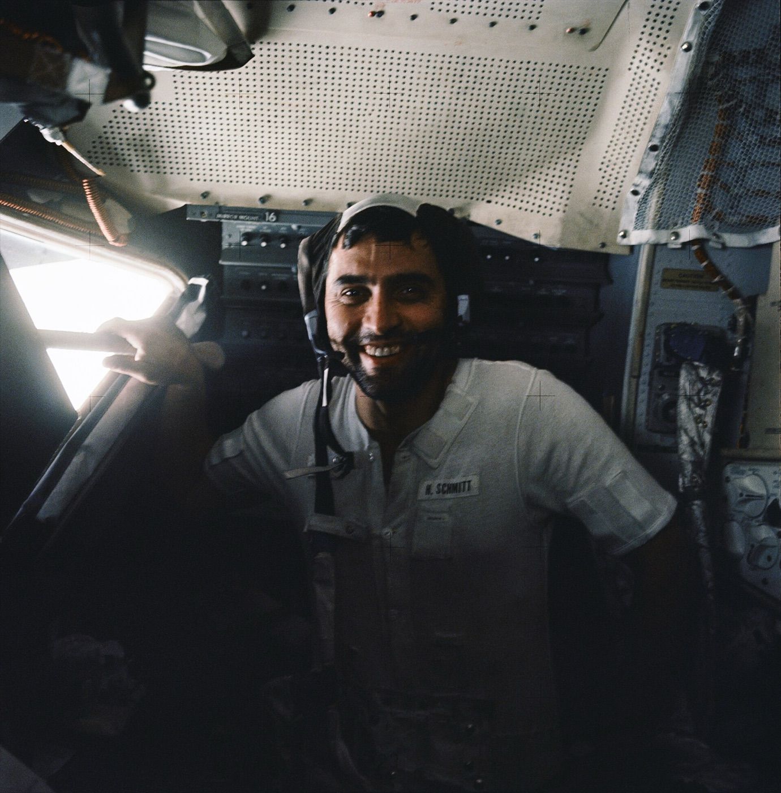

Surface dust — the lunar + Mars hazard everyone underestimated
Apollo crews returned with suits abraded after 10 EVAs and airlocks jamming on dust. Mars regolith is chemically toxic. Every long-stay architecture is built around dust protocols — they are the operational hazard nothing makes go away.
Lunar dust is mechanically dangerous in a way no terrestrial dust prepares you for. The surface is a fine regolith — particle sizes from sub-micron up to coarse sand, with a median of 70 µm — that was created by 4 billion years of micrometeorite impacts. Each impact is a tiny explosion that fragments existing rock; the fragments cool in vacuum without water to round their edges. The result is a powder of angular glass shards, sharper than ground glass. Adding to the hazard: lunar regolith is electrostatically charged by UV photoionisation on the day side and by plasma exposure in the lunar terminator zone. Charged dust clings to everything — sticks to suit fabric via electrostatic adhesion at a level that brushing alone cannot remove. Apollo crews reported that lunar dust degraded EVA suit joint seals after about 10 EVAs (Apollo 17 was the only mission to make three back-to-back EVAs, and Cernan's suit zipper was showing wear by the third).
Operational impacts on Apollo: airlock seals jammed when dust contaminated the gasket interfaces; coolant lines on the LM PLSS (Portable Life Support System) clogged with dust ingressed through the suit umbilical; cameras and instruments needed constant brush-down; sample-return containers couldn't seal properly against the dust intrusion; and the LM cabin atmosphere after the third EVA had a smell that all 12 moonwalking astronauts described as 'gunpowder' or 'spent fireworks' (the actual cause is still debated — possibly nano-iron particles re-oxidising on contact with cabin O₂). Several Apollo crew members reported hay-fever-like symptoms in the LM cabin during the rest periods between EVAs. None of these were show-stoppers for missions lasting 12-72 hours; all of them would become show-stoppers for sustained presence.
Mars dust is chemically dangerous in a way the Moon is not. Phoenix lander (2008) confirmed by wet chemistry that Martian regolith contains 0.5-1% by mass of perchlorate (ClO₄⁻) salts, plus chlorate and chlorite. Perchlorates are thyroid endocrine disruptors at concentrations above ~25 ppb; ingesting Mars dust unfiltered would deliver doses orders of magnitude above the OSHA workplace limit within minutes. Curiosity and Perseverance have confirmed perchlorate distribution across both equatorial and high-latitude sites — it is global. Mars dust is also significantly more weathered than lunar dust (water has acted on it during the planet's wetter past), with rounder particle shapes and lower electrostatic charging, so the mechanical hazard is smaller. But the chemical hazard means Mars dust ingress into the habitat is a medical emergency, not just an operational nuisance.
The mitigation architecture that has emerged is the suitlock airlock. Instead of cycling suits through a pressurised airlock (Apollo, Shuttle, ISS approach), the suitlock keeps the suit permanently outside, attached to the habitat's outer hull via a backpack-port. Crew climb into the suit from inside the habitat without bringing dust into the pressurised volume. The Mars Z-2 prototype, the Boeing-Collins Aerospace Artemis EVA suit, the Russian Orlan-derived ILRS suit, and the Chinese Feitian-derived lunar EVA suit are all designed around suitlock attachment. Supplementary tech: Electrostatic Dust Shield (ESD), a NASA Kennedy invention that puts AC voltages across surface coatings to lift charged dust off via electrohydrodynamic forces, demonstrated at lab + small-flight scale (CubeSat experiments). Internal HEPA filtration on every airlock cycle. Decontamination shower (water rinse) before re-entering deeper habitat zones. All of these are necessary; none of them alone is sufficient. Dust will be the most-managed daily operational risk of any surface stay longer than 30 days.
